7 Week7: Classification II
7.1 Summary
This week I learned several analysis methods, object based image analysis and sub pixel analysis
7.1.1 Objected based image analysis
Superpixels are regions of pixels that have similar values and can be used to simplify image processing tasks such as segmentation. It is common to use SLIC algorithm is a method to generate superpixels by clustering pixels in a five-dimensional color and image plane space. It is fast, easy to use and produces compact and uniform superpixels.
The top-left panel shows the initial segmentation. The top-right and bottom-left show the segmentation after 1 and 10 iterations. SLIC has converged in the bottom-right panel
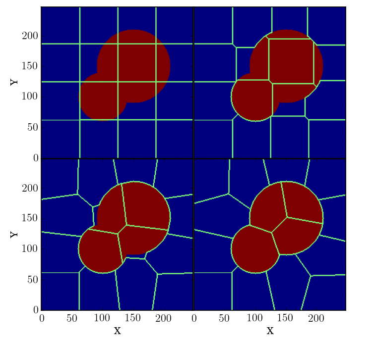
- The improvement of SLIC algorithm - SLICO
SLIC need to set the compactness parameter or try different values of it, but SLICO adaptively chooses the compactness parameter for each superpixel differently. This generates regular shaped superpixels in both textured and non textured regions alike.
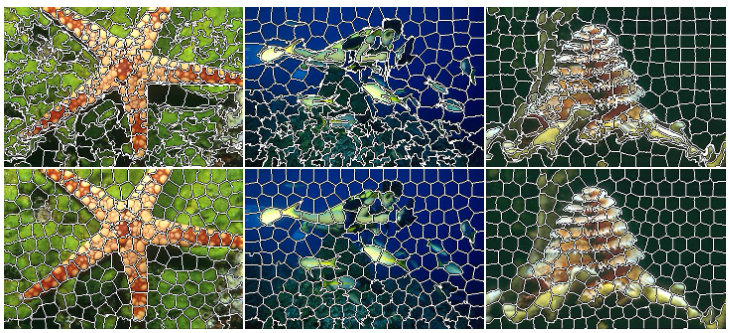
7.1.2 Subpixel analysis
Subpixel analysis can estimate the location or movement of an object in an image with a precision higher than the pixel level1. subpixel analysis can be used to measure the dimensions of a small object by removing the background spectra and comparing the residual spectrum with a signature spectrum
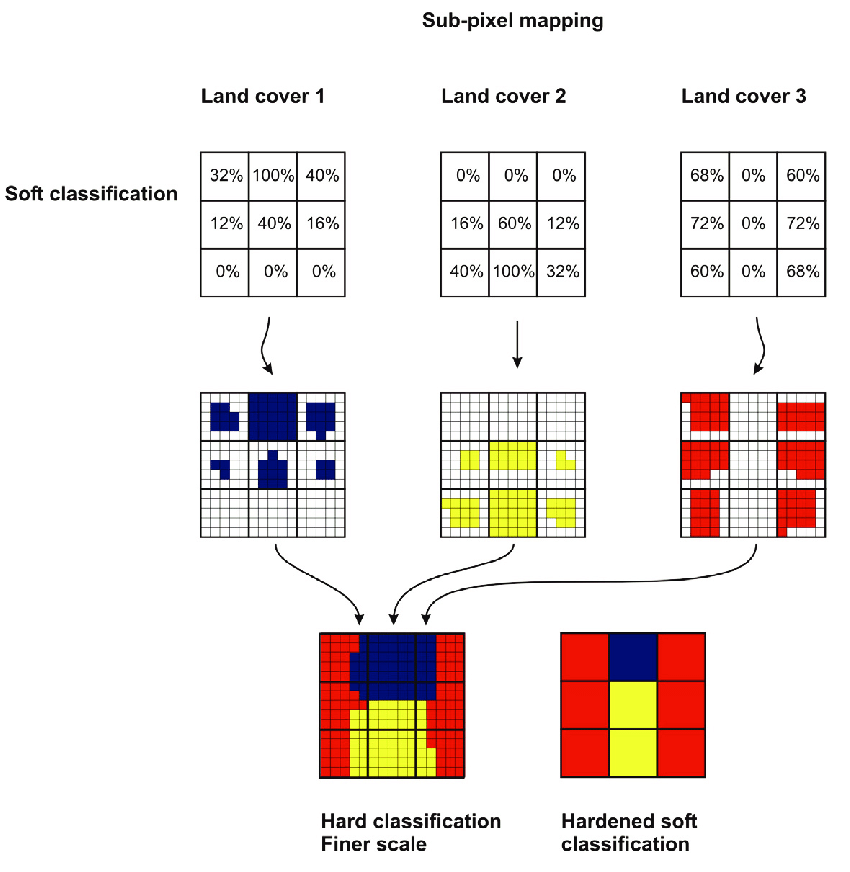
7.1.3 Accuracy assessment
Here we use the confusion matrix to assess the accuracy of algorithm performance, but not every indicator can be satisfied because of the conflict of indicators themselves.
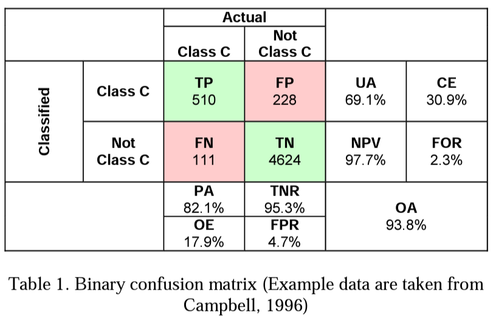
- producer’s accuracy defined as the fraction of correctly classified pixels (TP) compared to ground truth data (TP+FN)
\(TP / (TP + FN)\)
- user’s accuracy defined as the fraction of correctly classified pixels (TP) relative to all others classified as a particular land cover(TP+FP)
\(TP / (TP + FP)\)
- overall accuracy that represents the combined fraction of correctly classified pixels (TP +TN) across all land cover types (TP+FP+FN+TN)
\((TP +TN) / (TP + FP + FN + TN)\)
7.1.3.1 F1 score
The F1-Score (or F Measure) combines both recall (Producer accuracy) and Precision (User accuracy), the importance of F1 score is that it can balance the trade-off between precision and recall, and give more weight to both false positives and false negatives than accuracy alone.
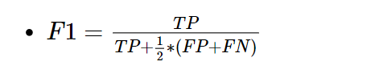
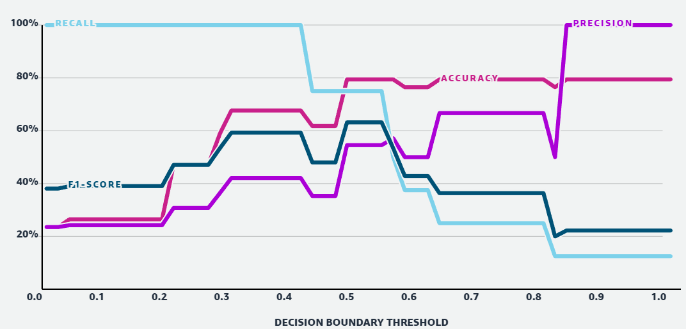
7.1.3.2 ROC curve
ROC curve is a useful tool to measure the generalization ability of a machine learning algorithm, but in reality, we can get the right curve (discrete) based on limited cases and extrapolate the complete curve
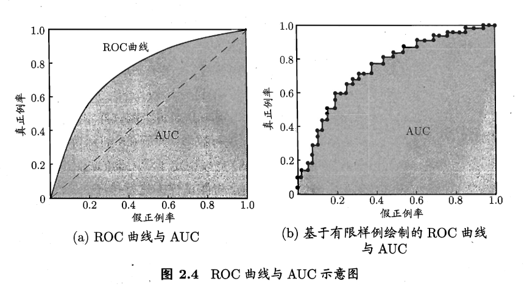
7.1.3.3 Cross validation
In order to enhance the randomness of training data, it is common to use cross validation, here is the schematic diagram.
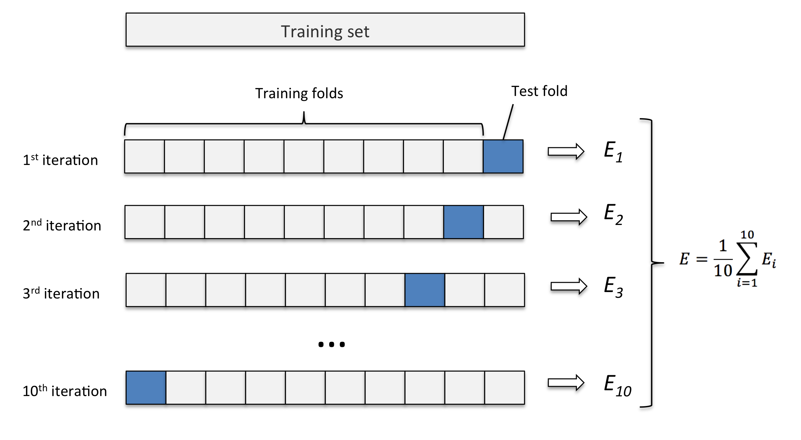
7.1.3.4 Spatial cross validation
Spatial cross validation splits the data into groups based on their spatial coordinates, and then evaluates a model on each group separately. It is used to avoid overfitting or underfitting when the data has spatial structure or dependence.
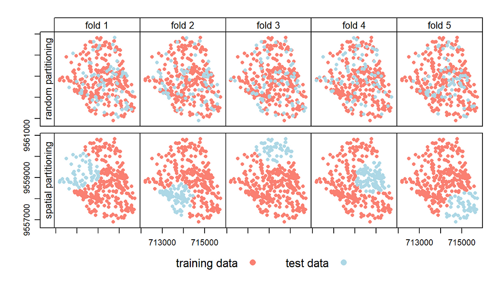
7.1.3.5 GEE practice
I used several classification methods mentioned before and used Lhasa Tibet as an analysis example.
Here is the workflow:
select Lhasa vector data and EO data
sub-pixel analysis use unmix() to add all togther and calculate confusion matrix
object based image analysis, use gradient()
superpixel analysis, use k-means then set seeds, run SNIC and calculate NDVI, do a classification task.
Here is the result of each method:
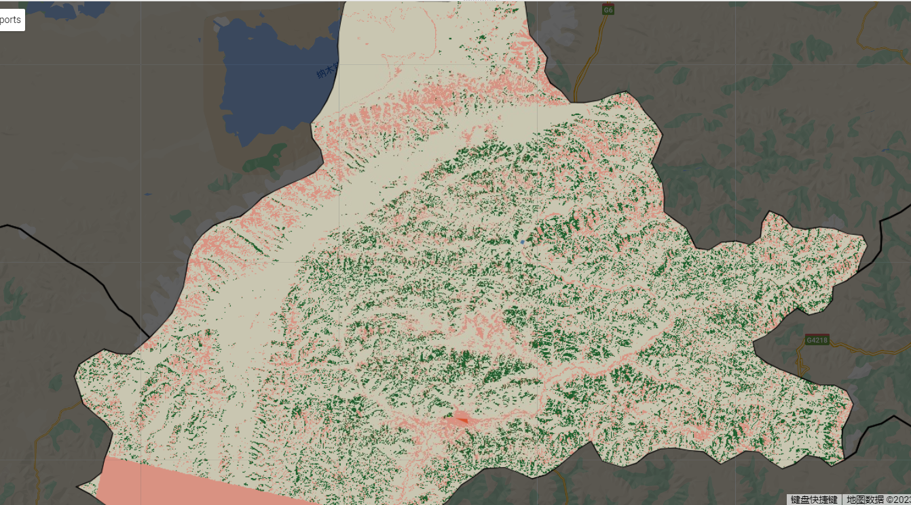
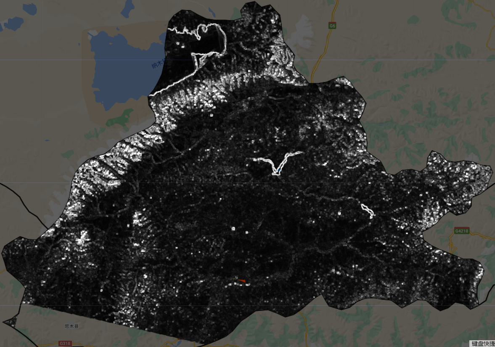
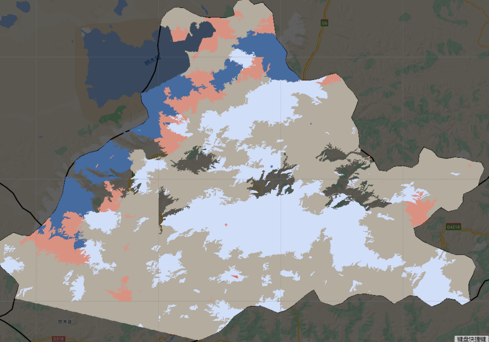
In general, sub-pixel shows more detailed information than superpixel, the differentiation between small pixels is ignored, resulting in larger pixels, and this approach is better at the higher precision level.
7.2 Applicaion
- Case 1: Burlington city land type analysis
Steps:
get EO data of Burlington city (on the border between the states of Iowa and Illinois)
use SNIC(Simple Non-Iterative Clustering) for the segmentation
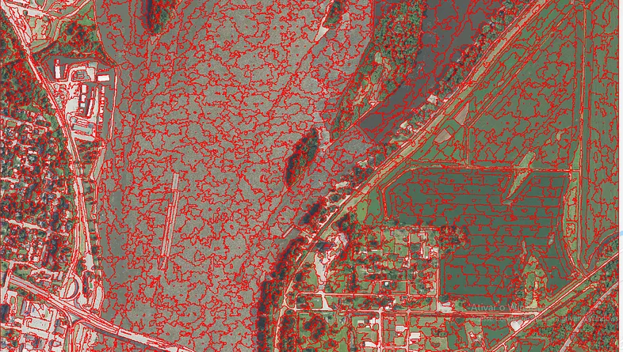
- sample collection, select each class of land use and land cover. typically, 5 classes: Urban, Water, Agriculture, Forestry and Grass.
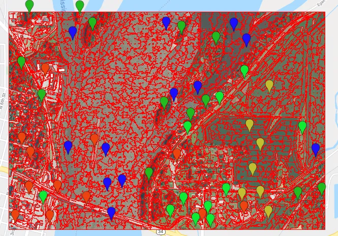
- perform the segment classification. the algorithm is Random Forest, result:
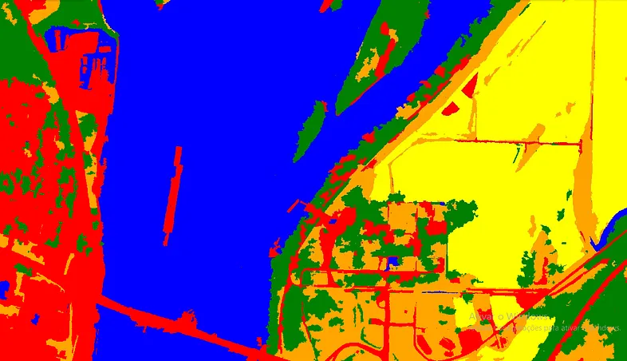
- Case 2: Assess building seismic vulnerability
Wu et al. (2013) used object-based image analysis (OBIA) that uses high-resolution satellite images to assess building seismic vulnerability. They apply OBIA to extract building features such as height, area, shape, and roof type from satellite images of Guanggu Wuhan, China. They then use these features to classify buildings into different vulnerability classes based on a seismic vulnerability index. They compare their results with field surveys and find that OBIA can provide a reliable and efficient way to map building seismic vulnerability at a large scale.
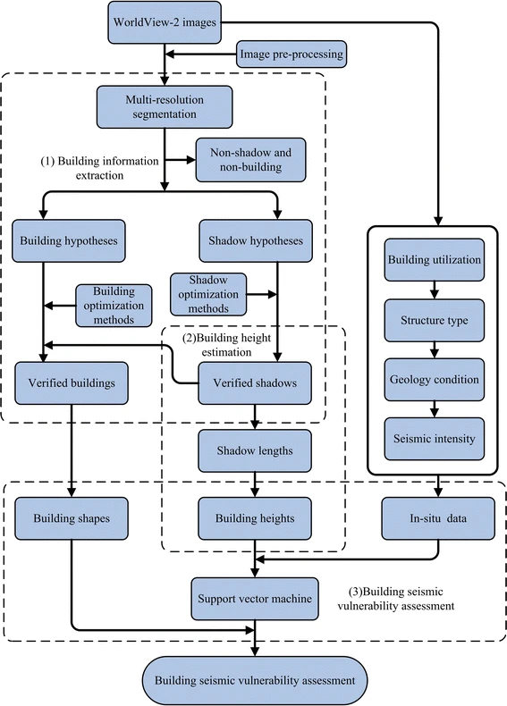
They used SNIC for segmentation:
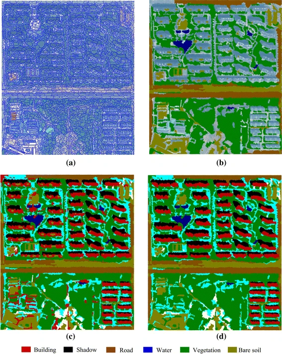
After analysis, they give a building seismic vulnerability assessment of investigated area, and confirm the grade.
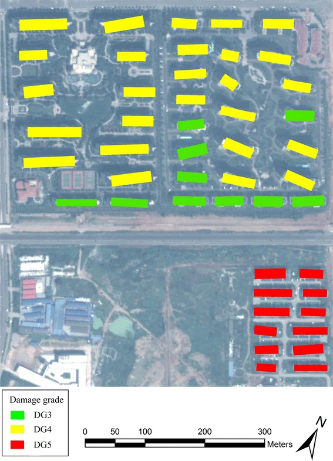
7.3 Reflection
In this week, I feel interested the k-means algorithm when conducting a superpixel analysis. At that time, I found the result of K-means is not good, I want to know the principle of K-means and its substitutes.
7.3.1 Principle of K-means
K-means partitions a set of data points into k groups, where k is a predefined number. The principle of k-means is to minimize the sum of squared distances between each data point and its closest cluster center. The algorithm works as follows:
Step 1: Randomly initialize k cluster centers
Step 2: Assign each data point to the nearest cluster center
Step 3: Recalculate the cluster centers as the mean of the data points assigned to them
Step 4: Repeat steps 2 and 3 until convergence or a maximum number of iterations is reached
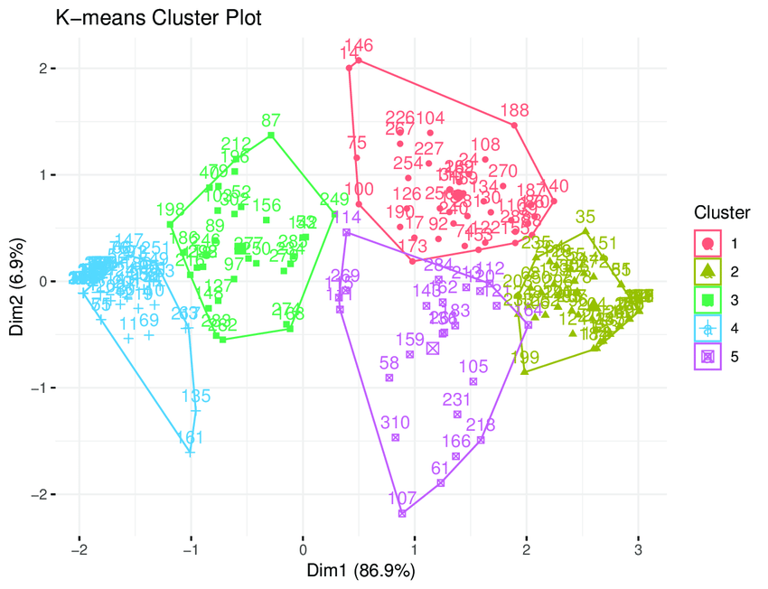
7.3.2 Improvements
k-means is suitable for clusters with clear delineation boundaries between each cluster, and the distribution is close to circular, and the amount of data in each cluster is more uniform, so it does not play very well in practical applications.
There is an improved clustering algorithm called Gaussian mixture model (GMM), GMM combines several single Gaussian distributions in average and standard deviation, then they have several differences:
- K-means assumes that each cluster has a spherical shape and equal size, while GMM assumes that each cluster has an elliptical shape and different size.
- K-means assigns each data point to one and only one cluster center based on the minimum distance, while GMM assigns each data point to multiple cluster centers based on the probability distribution.
- K-means uses an iterative local optimization technique to minimize the sum of squared distances between each data point and its closest cluster center, while GMM uses an expectation-maximization (EM) algorithm to maximize the likelihood of the data given the model parameters.
In reality, we use GMM to divide clusters that exhibit elliptical data distributions precisely because it is better than K-means
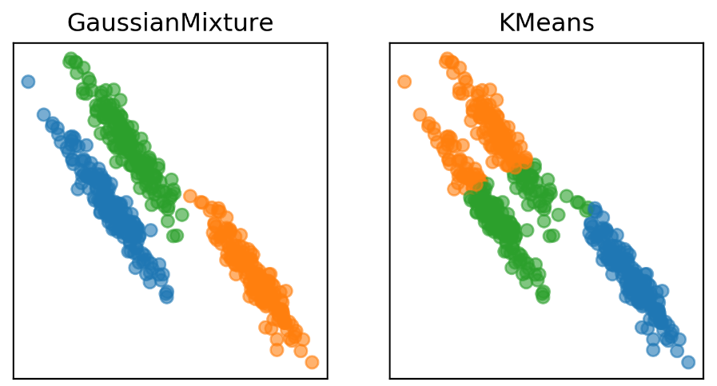